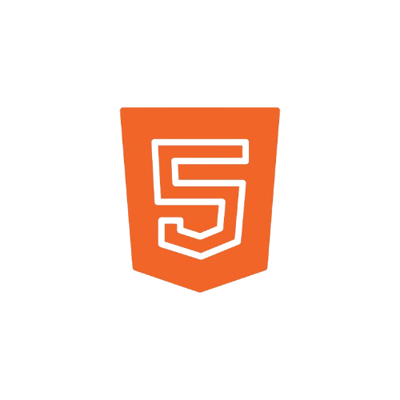
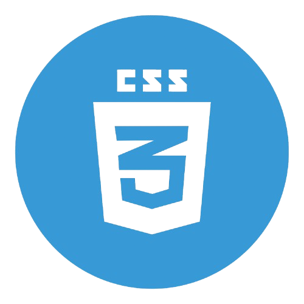
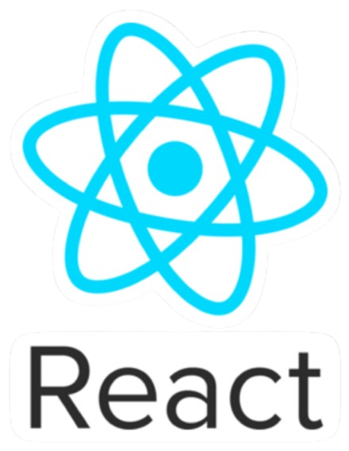
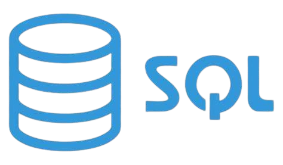
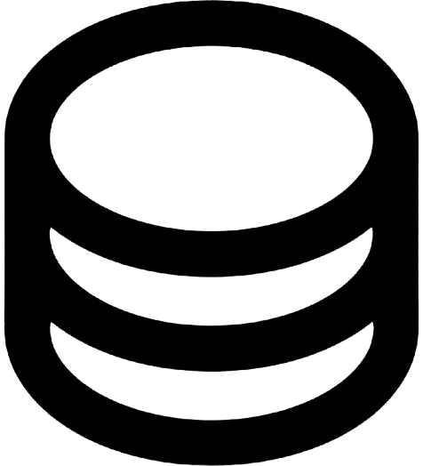
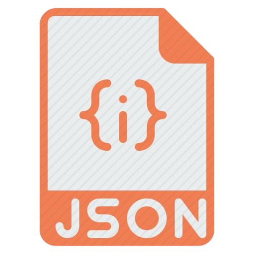
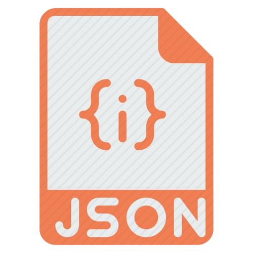

Samuel Doidi - Étudiant 2ème année BTS SIO
Passionné par les technologies et l'innovation, je suis étudiant en BTS SIO option SLAM. Mes domaines de prédilection incluent le développement d'applications web, la conception d'interfaces interactives, et la création de jeux vidéo.
Mon objectif est de continuer à explorer des solutions innovantes et de collaborer sur des projets qui ont un impact réel. Bienvenue dans mon portfolio !

À propos de moi
J'ai obtenu mon baccalauréat technologique STI2D en 2019 au lycée polyvalent Rouvières à Toulon, marquant le début de mon parcours dans les domaines de la technologie et de l'informatique.
Durant mon BTS SIO option SLAM, j'ai acquis des compétences solides dans le développement web et logiciel.
J'ai maîtrisé des technologies clés telles que

HTML
,

CSS
, et
 JavaScript
pour concevoir des interfaces dynamiques et interactives.
JavaScript
pour concevoir des interfaces dynamiques et interactives.
J'ai également travaillé avec des outils avancés comme  React pour développer des applications modernes.
Côté back-end, j'ai appris à manipuler des bases de données relationnelles

(SQL)
et non relationnelles

(NoSQL)
, ainsi qu'à créer des API performantes avec Express et à structurer des projets grâce à
 PHP
et le format

JSON
.
PHP
et le format

JSON
.
Grâce à mon alternance chez Orange, j'ai obtenu mon habilitation électrique, me permettant d'intervenir en toute sécurité sur des installations électriques.
Par ailleurs, je suis également formé en tant que Sauveteur Secouriste du Travail (SST), une compétence essentielle pour assurer la sécurité et intervenir efficacement en cas d'accident sur le lieu de travail.
Ces certifications reflètent mon engagement envers la sécurité et mon aptitude à évoluer dans des environnements exigeants.
Mes Compétences
Développement Front-end
HTML5
CSS3
JavaScript
React
Développement Back-end
PHP
SQL
NoSQL
Outils & Méthodologies
Git
VS Code
Postman
Trello
Microsoft Office
Figma
Méthodologie Agile
Mes Projets

Puntos
Jeu interactif combinant Puissance 4 et stratégie

Nausicaà
Parc aquatique
Présentation du Projet
Puntos est un jeu de stratégie innovant qui réinvente le concept classique du Puissance 4 en y ajoutant des mécaniques de jeu uniques et des éléments stratégiques avancés. Ce projet a été développé dans le cadre de ma formation en BTS SIO, démontrant ma capacité à concevoir et implémenter des solutions interactives complexes.
Objectifs du Projet
- Créer une expérience de jeu moderne et engageante
- Implémenter des mécaniques de jeu innovantes
- Développer une interface utilisateur intuitive et responsive
- Assurer une expérience de jeu fluide et performante
Technologies Utilisées
Fonctionnalités Principales
- Système de jeu basé sur des points stratégiques
- Interface utilisateur dynamique et responsive
- Système de tour par tour avec validation des coups
- Animations fluides pour une meilleure expérience utilisateur
- Système de score en temps réel
Défis Techniques et Solutions
Le développement de Puntos a présenté plusieurs défis techniques, notamment :
- Optimisation des performances pour une expérience de jeu fluide
- Implémentation d'un système de validation des coups complexe
- Gestion de l'état du jeu et synchronisation des actions
Ces défis ont été surmontés grâce à une architecture modulaire et l'utilisation de React pour la gestion efficace de l'état de l'application.
Résultats et Impact
Le projet Puntos a démontré ma capacité à :
- Concevoir et développer des applications interactives complexes
- Gérer efficacement les états et les interactions utilisateur
- Implémenter des solutions techniques innovantes
- Maintenir une base de code propre et maintenable
Présentation du Projet
Le projet Nausicaà est une application web développée pour le célèbre parc aquatique, visant à améliorer l'expérience des visiteurs et à optimiser la gestion des attractions. Ce projet a été réalisé dans le cadre de ma formation en BTS SIO, démontrant ma capacité à développer des solutions web complètes et adaptées aux besoins spécifiques d'une entreprise.
Objectifs du Projet
- Créer une interface utilisateur intuitive pour les visiteurs
- Développer un système de gestion des attractions en temps réel
- Implémenter un système de réservation en ligne
- Optimiser la gestion des flux de visiteurs
Technologies Utilisées
Fonctionnalités Principales
- Système de réservation en ligne des attractions
- Tableau de bord en temps réel pour la gestion des attractions
- Interface responsive adaptée à tous les appareils
- Système de notification pour les visiteurs
- Gestion des files d'attente en temps réel
Défis Techniques et Solutions
Le développement de ce projet a présenté plusieurs défis techniques :
- Gestion des pics de fréquentation et optimisation des performances
- Intégration avec les systèmes existants du parc
- Développement d'une interface utilisateur intuitive et accessible
Ces défis ont été surmontés grâce à une architecture robuste et l'utilisation de technologies modernes pour assurer une expérience utilisateur optimale.
Résultats et Impact
Le projet Nausicaà a permis de :
- Améliorer significativement l'expérience des visiteurs
- Optimiser la gestion des flux de visiteurs
- Réduire les temps d'attente aux attractions
- Augmenter la satisfaction client
Veilles Technologiques
J'ai décidé de concentrer mes veilles technologiques : React JS et Unreal Engine 5 .
Ces deux technologies représentent des piliers majeurs dans leurs domaines respectifs et sont en constante évolution, ce qui en fait des sujets fascinants à explorer.
React JS
React JS est un framework JavaScript incontournable pour le développement web front-end. Avec ses fonctionnalités innovantes comme les hooks, le context API, ou encore son intégration fluide avec des outils modernes comme TypeScript, React continue de redéfinir la manière dont nous concevons des interfaces utilisateur dynamiques et performantes. En suivant cette veille, je souhaite rester à jour sur les dernières mises à jour du framework, découvrir de nouvelles pratiques de développement, et comprendre comment React s'intègre dans des architectures complexes comme les applications full-stack ou les solutions cloud.
Unreal Engine 5
Unreal Engine 5 est une véritable révolution dans le domaine du développement de jeux vidéo et des expériences immersives. Avec des technologies comme Nanite pour les graphismes ultra-réalistes ou Lumen pour l'éclairage dynamique, Unreal Engine 5 repousse les limites de la création visuelle. Mais au-delà des jeux vidéo, ce moteur est également utilisé dans des secteurs variés comme l'architecture, le cinéma, ou même la simulation industrielle. Ma veille sur Unreal Engine 5 me permettra de suivre les innovations techniques, de découvrir des cas d'usage inspirants, et de comprendre comment ces avancées peuvent être appliquées dans des projets concrets.
Contactez-moi
Pour toute collaboration ou question, n'hésitez pas à me contacter :